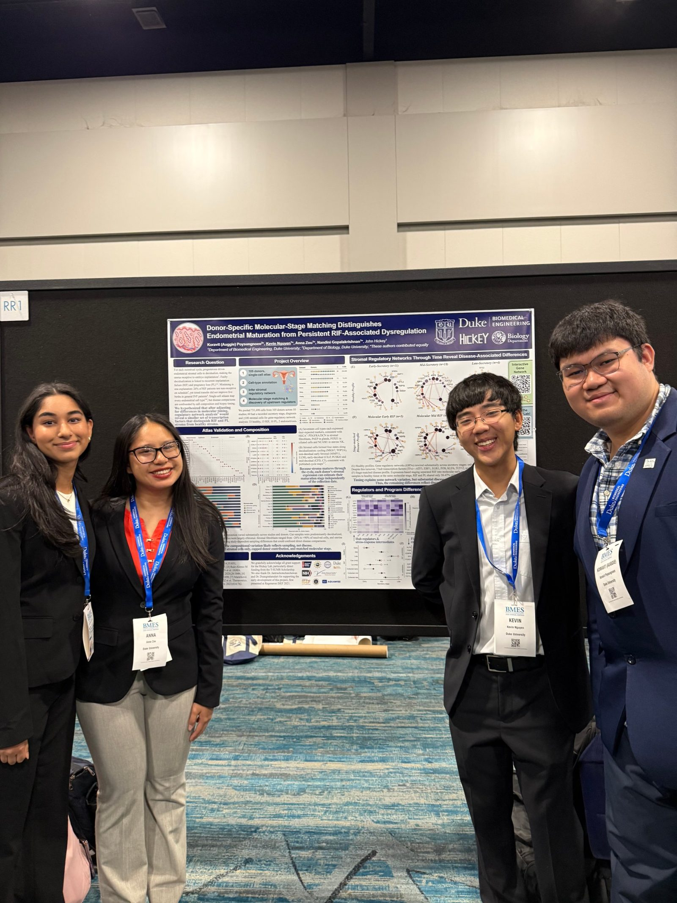
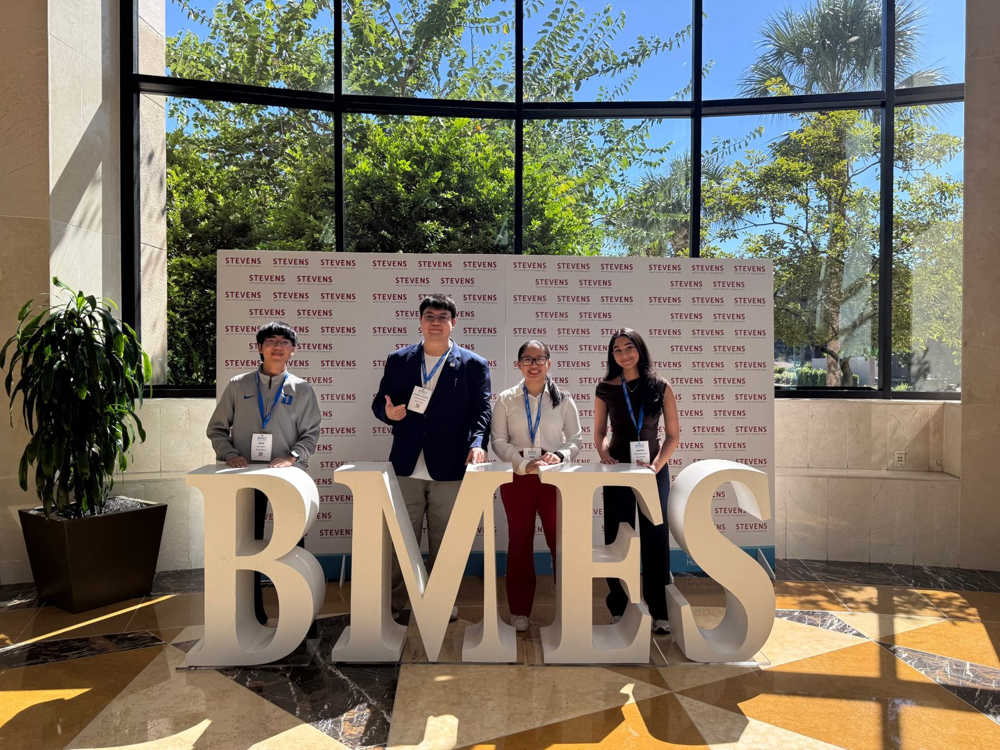

RESEARCH · DUKE HICKEY LAB
Endometrial Receptivity
Research
Gene Regulatory Networks in Recurrent Implantation Failure

Studying how endometrial cell states shift with receptivity and disease.
As an undergraduate researcher in the Duke Hickey Lab, I co-authored research on gene co-expression networks associated with recurrent implantation failure (RIF), a condition in which repeated embryo transfers fail despite seemingly healthy embryos. Our poster, "Donor-Specific Molecular-Stage Matching Distinguishes Endometrial Maturation from Persistent RIF-Associated Dysregulation," was presented at the 2026 Biomedical Engineering Society (BMES) Annual Meeting.
I analyzed 28 endometrial single-cell RNA-seq samples, spanning 299,000+ cells and 36,000+ genes, using Python and Scanpy to help distinguish normal tissue maturation from RIF-associated expression changes. I also develop Python pipelines with AI-assisted coding (Codex) to investigate endometrial cell states and candidate gene regulators, accounting for biological timing and cell-type differences.
Single-Cell Analysis
Processed 28 samples spanning 299,000+ cells, using Scanpy for clustering and cell-type annotation.
Molecular-Stage Matching
Helped develop a donor-specific framework to match each sample's true secretory stage, separating disease signal from natural timing variation.
Regulatory Network Discovery
Investigated transcription factors and candidate upstream regulators that differ between healthy and RIF-affected stromal tissue.
